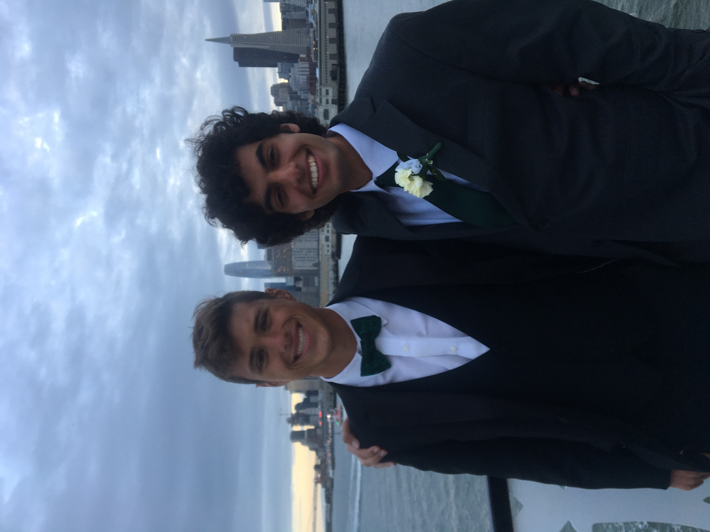

Just a little about me

My Life
-
August 1 2023
Started PhD at UK
Moved to Lexington and started my PhD at the University of Kentucky. I will mostly be working on computer simulations of congugated polymers and other organic materials..jpg)

June 20 2023
Backpacking Europe
5 countries, 11 cities:
Madrid -> Barcelona -> Munich -> Berlin -> Hamburg -> Amsterdam -> London -> Naples -> Rome -> Florence -> Venice
I am so incredibly grateful to have gone on this trip with Eilbrone. I saw so many cool sites and met such amazing people (specifically, some really cool Australians). I tried to do as much as possible: techno clubs in Hamburg, site-seeing in Rome, hiking in Spain, and so much more. Truly a blast.
.jpg)
.JPG)
.jpg)
.jpg)
.jpg)
.jpg)
June 12 2023
Graduation
I officially finished my BS with a major in chemistry and a minor in mathematics! UCLA was a great school, and I really enjoyed my time there. I grew close to so many people, and I know we will always be friends. I'm going to miss UCLA, but I sure won't miss the LA traffic!
.jpg)
.jpg)
September 14, 2022
Climbed Mt Whitney!
Tough Hike!
This in all honesty might be the coolest thing I have ever done! The views were incredible and people extremly kind. We did not get backpacking permits only day permits. This means we left from Whitney Portal Road at 3 AM, Summited around 2 PM, and made it back to the car at 8 pm. Such a long day but it was incredible!


October 2019
Started UCLA
Chemistry Major and Math Minor
If you know a little about me you'll know I have always had a love for chemistry. Something about it just always really excited me. Thats why its no surprise I delcared myself and Chemistry major (and got to work with my second favorite subject, Math)

2016
Pitman Highschool
Young Nolan goes to Highschool
As a kid who had two left feet, I really immersed myself into the whole student athlete thing. When I wasn't doing my homework or volunteering, I was playing a sport. I participated in football, wrestling, water polo, and swimming, loving them all.

2011
Met Best Bud
Eilbrone
My best friend Eilbrone and I met in the 4th grade and have been best buds ever since! We've gone on many adventures together, and there are more to come.

July 16 2001
Birth
I was born! Nothing more nothing less!